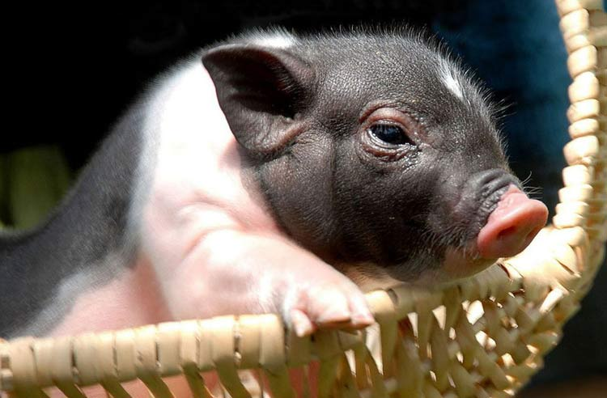
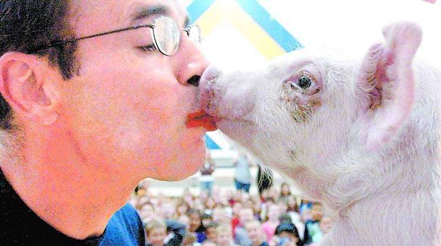

猪是一种可爱的动物，有一首脍炙人口的歌是这么唱的：“猪，你的鼻子有两个孔，感冒时的你还挂着鼻涕牛牛”。猪其实还非常的有内涵，几乎全身都是宝，一篇火遍大江南北的小学作文里这样写道：“猪肉可以吃，猪皮可以做衣服，猪的毛可以做刷子”。
猪这么好，可是当我们想到猪的时候我们想到的是什么——“你怎么这么笨，像个猪一样！”“死胖子，你就是个猪！”“你是猪啊，你敢再蠢一点吗？”坦白讲，这样对猪是很不公平的！
1984年，美国加利福尼亚州的格林维尔市成立了一个爱猪者俱乐部，宣传猪的可爱和聪明。有人喜爱、有人帮忙宣传，这还不够，最重要的是猪自己要给力，抓住机会“上位”。猪确实也是这样做的——就在俱乐部成立后的第二年，美国出现了一头英雄猪，它英勇的救起了一个溺水的9岁小孩。
这之后猪的名声大振，俱乐部也因此迅速的扩大。从此，猪的崇拜者们纷纷成立猪迷俱乐部。其中南卡罗来纳州格林维尔的猪嘴协会就纳入了会员500多人，会员来自美国22个州。参加该协会有非常“苛刻”的条件，这当然不是指交纳50美元会费，而是要回答诸如“你喜欢猪吗？你会养猪吗？”这种严肃的问题。
这些协会是“干大事”的——他们想改变猪的社会地位！协会的章程称，成立协会是为了改变人们对猪的评价。在他们的努力下美国把3月1日定为来全国爱猪日，每年都举办化妆舞会来庆祝节日，在会上人们戴上各种各样的猪面具，还会进行妙趣横生的吻猪比赛。
协会主席杰克·泰特说：“猪需要更多的关心和爱护。猪在家里不是动物，而是全家特别是孩子们的朋友。”现在猪已经是继猫、狗之后的又一宠物选手，猪的憨态、欢快等特性，已博得越来越多人的喜爱。
1、每年3月1日是美国全国爱猪日，这一天猪会得到很多亲吻，是真正的人生赢家；
2、“猪”不是一个贬义词！